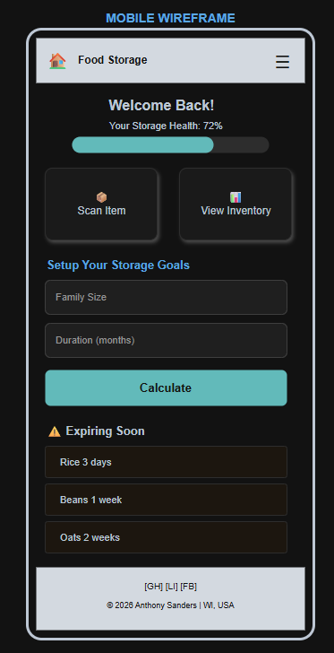
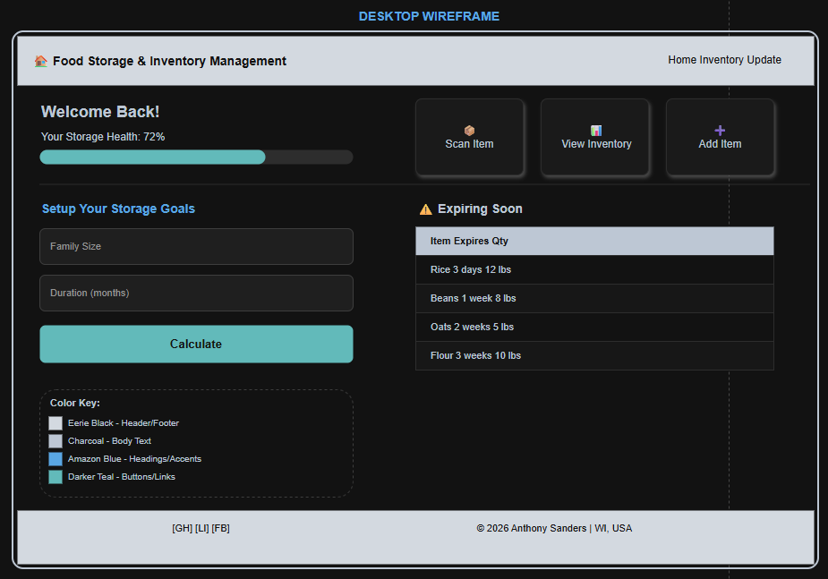

Site Plan Details
Site Name - Food Storage & Inventory Management
Purpose: Serves as a personal use tool for food storage inventory tracking
Site Purpose
This project allows a user to more effectively manage their food storage inventory by just scanning a barcode of the item they are storing. The goal is to encourage food storage given the streamlined approach to doing so with this tool.
Scenarios
- How do I quickly add a new item to my food storage inventory?
An "update inventory" page will be provided for them to scan the upc of the item they are adding along with an input for the expiry date. This creates a frustration free item entry and look-up option for users.
- How long will my current food storage last my family based on what I have?
With the inventory tracking page, there is no more manual guessing about the oldest item in the inventory or how much food is needed to support your family.
Color Scheme
- Header & Footer backgrounds: Eerie Black
(#131A22) - Body text on light backgrounds: Charcoal
(#232F3E) - Primary accent (headings, borders, key elements): Amazon Blue
(#146EB4) - Button and Link Accent Colors: Darker Teal
(#006666) - Main Page Backgrounds, Text on Dark Backgrounds: White
(#FFFFFF)
Typography
- Font Family: Roboto (Google Fonts)
- Headings (h1, h2): Roboto, font-weight 700
- Body text and paragraphs: Roboto, font-weight 400
- UPC codes and inventory data: Roboto Mono (Google Fonts), font-weight 400
Wireframe

